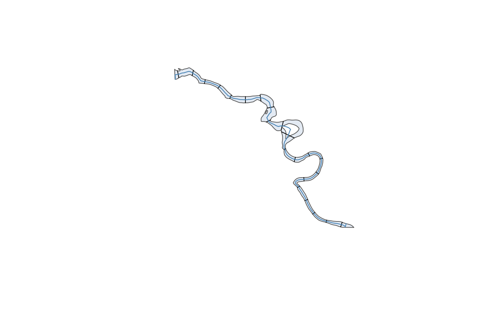

Channel Computations
2026-05-27
channel_computations.RmdWhile the Getting Started with Channels and Channels with Profiles vignettes cover creating and eroding channels, this vignette covers calculations on channels.
First, make a channel for the Squamish River (same workflow as in the Channels with Profiles vignette).
library(xchan)
library(terra)
#> terra 1.9.27
squamish <- xt_generate_plan(Squamish_bankline, spacing = 500)
squamish <- xt_generate_profile(squamish, unwrap(Squamish_dem), sample_freq = 10)
plot(squamish)
Distance Downstream
Planimetric cross sections only
Downstream distances can be calculated along the channel axis, where “0” is the canonical distance for the most upstream cross section.
dist <- xt_distance_downstream(squamish)
head(dist)
#> Units: [m]
#> [1] 255.5048 766.5143 1277.5239 1788.5334 2299.5430 2810.5525As with most computational functions,
xt_distance_downstream() has an optional axis
argument if you wanted to use a different axis than the stored one.
Elevations
Profile cross sections
Channel elevation can be defined in a few different ways. Some references use a single point, such as the thalweg elevation.
head(xt_elevation(squamish, reference = elevation_thalweg()))
#> [1] 28.96575 29.03833 27.89004 27.28948 26.52531 26.08511Other references summarize multiple points with a function. For
example, elevation_bank() applies a function to the two
outer banks; by default, it returns the lower of the two.
head(xt_elevation(squamish, reference = elevation_bank()))
#> [1] 28.96575 29.03833 27.89004 27.30238 26.57464 26.61994Another option is to summarize elevations along the wetted bed with
elevation_bed(). Here we take the median.
head(xt_elevation(squamish, reference = elevation_bed(median)))
#> [1] 29.09387 30.84412 27.99080 27.51826 27.27586 28.36863To learn more about the different elevation references, see the
documentation at ?elevations.
Gradient
Profile cross sections
A useful way of approximating flow gradient is differencing some
aspect of the topography between cross sections along the channel axis.
The xt_gradient() function calculates this differential
using a sliding window approach based on number of cross sections before
and after each cross section.
For example, we can calculate the gradient as the slope of the banks three cross sections upstream and downstream of each cross section. Use the Elevation section to specify the elevation reference.
grad <- xt_gradient(
squamish,
before = 3,
after = 3,
elevation = elevation_thalweg()
)
head(grad)
#> [1] NA NA NA -0.001326036 -0.000896632
#> [6] -0.001059816By default, truncated windows are not allowed, which is why the first
three cross sections are NA. This behaviour can be changed
with the complete argument.
We can combine this with the xt_distance_downstream()
function to plot the gradient along the channel axis.
While you can make this plot smoother by increasing the window size,
it’s worth considering combining this with a smoother function like
stats::loess().
Other Computations
If these computations don’t cover your needs, you can take a manual
approach by first exporting the channel with xt_as_sfc()
and then using the sf package
to conduct the calculations. But of course, not until after submitting an Issue
on the xchan GitHub repository! Your feedback is greatly
appreciated.